OVD-SLAM: An Online Visual SLAM for Dynamic Environments
Jiaming He , Mingrui Li, Yangyang Wang , Graduate Student Member, IEEE, and Hongyu Wang , Member, IEEE
Abstract—Most existing dynamic simultaneous localization and mapping (SLAM) methods integrating neural networks require high computational support and predefined categories of dynamic objects. This article proposes an online visual SLAM system without predefined dynamic labels for dynamic environments, which is built on ORB-SLAM3. We combine semantic information, depth information, and optical flow to distinguish foreground and background and recognize dynamic regions. The foreground points in dynamic areas are regarded as moving points. We also restore static points on moving objects by the average reprojection error between multiple frames to adapt to nonrigid motion and low-dynamic environments. In pose
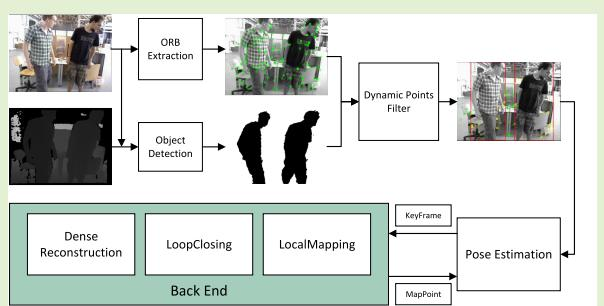
optimization, we define an optimization weight for every point to decrease the negative influence of potential dynamic points. The experiments on TUM RGB-D and Bonn datasets show that OVD-SLAM achieves more accurate and robust localization than other state-of-art dynamic SLAM methods. To further verify our system’s online performance and robustness, we also test it in real dynamic scenes and apply it to an augmented reality (AR) application using a handheld RGB-D camera.
Index Terms— Depth information, dynamic environments, optimization weight, visual simultaneous localization and mapping (SLAM).
I. INTRODUCTION
IMULTANEOUS localization and mapping (SLAM) is S a crucial technology for mobile robots to achieve autonomous navigation. Compared with lidar sensors, vision sensors have the advantages of easy integration, low cost, and low energy consumption. Therefore, visual SLAM has received extensive attention from researchers. It has made significant progress and has been widely used in automatic driving, augmented reality (AR), virtual reality (VR), UAVs, and other fields. Visual SLAM utilizes the rich scene information collected by cameras to achieve accurate ego-motion estimation and mapping. Traditional visual SLAM systems [1], [2], [3], [4] are based on the static environment assumption. However, in dynamic scenes, the dynamic objects bring wrong data associations, causing a decline in localization accuracy and system robustness. The RANSAC [5] in [1], [2], and [3] can only handle a few outliers and will be invalid in highdynamic scenes. Many algorithms [6], [7], [8], [9], [10], [11], [12], [13] have been committed to solving SLAM problems in dynamic environments in recent years. Dynamic SLAM algorithms based on traditional frameworks mostly use purely geometric constraints [12] or additional sensors [14] to distinguish dynamic and static points. Still, these algorithms often need an advanced understanding of the scene and cannot effectively remove all dynamic points when dynamic objects occupy most of the image area.
With the development of semantic segmentation and object detection, some algorithms [8], [9], [10], [11], [13] integrate deep learning networks into the SLAM system to adapt to dynamic environments. Feature points are divided into dynamic and static points by combining semantic information and geometric constraints. However, the pixel-level masks obtained by semantic information are not accurate enough for overlapping objects and cannot cover all regions of objects, especially the boundaries. For a more accurate and robust segmentation network, it often increases a large amount of computation and is difficult to guarantee the real-time. The object detection methods provide bounding boxes covering whole objects, but the boxes often contain large background regions. Deleting all the points in the bounding boxes will lead to the loss of useful information and even the depletion of features when objects occupy a large image area. Moreover, SLAM based on deep learning methods needs to calculate epipolar constraints [9], or categories of predefined dynamic objects [15], [16]. However, the additional computation caused by epipolar constraint is significant for a real-time system, and the predefined dynamic labels cannot include all dynamic objects in different scenes. For example, in low-dynamic environments, the nonrigid motions and minor motions will invalidate the predefined categories and threshold, respectively.
To solve the above problems, we propose an online visual SLAM algorithm based on YOLOv5 [17] and optimization weights for dynamic environments named OVD-SLAM. The proposed algorithm is built on the RGB-D mode of ORB-SLAM3 [18]. We propose a method to distinguish foreground from background by combining semantic information and depth constraints of every box. The method can provide object masks that approximate the precision of semantic segmentation. We use optical flow and a chi-square test to check the moving consistency to recognize dynamic boxes without predefined dynamic labels. Then, the foreground points in dynamic boxes are regarded as dynamic. Unlike traditional optimization frameworks, in pose optimization, we calculate an optimization weight for every map point to distinguish their degree of movement and reduce the negative influence of potential dynamic points. The process of pose optimization consists of two stages, which can refine the poses with more reliable information in images. We also add a dense reconstruction thread to the system, which is helpful for further research, such as path planning. The main function code is open-source at https://github.com/HJMGARMIN/OVD-SLAM. The main contributions of this work are summarized as follows.
1) To reserve the background points in boxes, we propose a statistics-based segmentation algorithm to distinguish foreground points and background points. The method fully uses depth information from the RGB-D camera and priori information from YOLOv5. The algorithm can effectively extract the background points in boxes and run quickly.
2) We propose a more efficient method to identify dynamic points by checking moving consistency to avoid the large computation of solving fundamental matrix. The method removes the points with abnormal optical flow values through the chi-square test. It automatically identifies which objects are dynamic without manually presetting dynamic and static attributes.
3) We calculate an optimization weight for every map point in the current frame to evaluate the confidence of potential dynamic map points. Our optimization algorithm balances the impact of potential dynamic points on the cost function by considering the dynamic characteristics of different points. We jointly refine camera poses and weights to provide more accurate localization.
II. RELATED WORKS
A. Visual SLAM Based on Traditional Framework
The traditional visual SLAM algorithm treats dynamic points as outliers. The authors [1], [2], [3] recognize outliers Authorized licensed use limited to: Jiangnan University. Downloaded on S through RANSAC and can operate stably in static or low dynamic environments. However, when there are a lot of dynamic points in the scene, the RANSAC [5] algorithm will fail. BaMVO [19] uses the depth difference between foreground and background to estimate the static background model from a multiframe depth map to distinguish dynamic points. DSLAM [12] uses a Delaunay triangulation method to build an undirected graph composed of sparse map points. Although the algorithm can distinguish dynamic and static map points based on point correlations, it may also retain dynamic points that are static in the several checked frames. LC-CRF SLAM [20] provides an initial posture and dynamic point priori through GC-RANSAC [21] and then uses a consistent long-term condition random field to detect dynamic points. StaticFusion [22] and ReFusion [23] use K-means clustering and computing pixel residuals to identify dynamic areas, respectively. However, using these two methods makes it difficult to identify all dynamic regions. Yang et al. [24] groups point based on the depth and appearance of the pixel. Then, it identifies dynamic regions by checking motion consistency in each region and removes the points in these areas. Dynam-SLAM [14] combines stereo vision scene flow with IMU for dynamic feature detection. However, the IMU will bring error accumulation because of the bias stability, misalignment, and angle random walk. These parameters are related to the accuracy of the device itself, and it is difficult to identify and improve them through algorithms or manual calibration. In this article, we only use an RGB-D camera to achieve localization and mapping in indoor dynamic scenes.
Traditional VSLAM algorithms can only use tools such as support vector machines and conditional random fields to segment and recognize objects. Although these tools do not need prior information and usually run in real-time without GPU, they cannot accurately handle scenes with many dynamic objects. These methods also cannot achieve advanced tasks because of a lack of high-level information about objects. The proposed approach integrates an object detection network to provide semantic information. With the priori information of objects in the scene, the system can identify dynamic targets more comprehensively and purposefully.
B. Visual SLAM Integrated Deep Neural Network
With the development of deep learning, many dynamic SLAM systems incorporating deep neural networks have emerged. The visual SLAM using image information is inherently suitable for merging semantic segmentation and object detection networks to identify dynamic objects. Some algorithms combine semantic segmentation methods with SLAM systems. For example, DynaSLAM [8] combines Mask R-CNN [25] and multiview geometry to process dynamic points on the person or other objects. It can also inpaint the occluded background and build a static 3-D map. However, the high computing cost makes it difficult to meet the realtime requirement. DS-SLAM [9] uses a lightweight segmentation network [26] and divides it as a separate thread to speed up the processing time of each frame. MaskFusion [10] proposed an object segmentation method for single-frame scenes based on mask R-CNN and geometric segmentation. It can simultaneously track the camera pose and the pose of eptember 16,2026 at 03:36:11 UTC from IEEE Xplore. Restrictions apply.

Fig. 1. Framework of OVD-SLAM. The RGB images pass through object detection network, and the depth images are divided into foreground and background. Then, we use optical flow and the result of foreground segmentation to determine boxes containing dynamic objects. In the first stage of pose estimation, we utilize the priori information of dynamic regions to remove foreground points and initialize the camera pose. In the second stage, we use the initial pose and reprojection constraint to restore static points on moving objects. In the back end, we receive the keyframes filtered by the local mapping thread and reconstruct the static point cloud map of the dynamic environment. We also merge different point cloud maps in the loop closing thread. The local mapping thread is consistent with ORB-SLAM3.
multiple moving objects and only output the geometric map of the static environment. RDS-SLAM [11] adds a semantic thread and a semantic-based optimization thread to ORB-SLAM3. It proposes an algorithm to handle the queue of keyframes in both directions, which makes the system based on a semantic network run as fast as traditional visual SLAM. Ji et al. [27] use K-means clustering and semantic mask to deal with unknown moving objects. DP-SLAM [28] overcomes the deviation of geometric constraints and semantic information by transmitting the motion probability of each key point in real-time. Blitz-SLAM [29] uses the original mask and depth information to modify the mask to cover dynamic objects more accurately. WF-SLAM [30] is a dynamic SLAM based on weighted features. It combines the advantages of semantic and geometric information to detect dynamic targets. However, the runtime needs to be improved to adopt real-time applications.
Some algorithms utilize bounding boxes obtained by YOLO or SSD to recognize the potential dynamic objects. Chen et al. [31] extended SORT [32] to track the detection results of the key frame received by MobileNetv2 SSDLite [33]. Crowd-SLAM [15] proposes a lightweight network named CYTi to detect persons in a crowded scene and remove dynamic points. However, CYTi can only detect persons, limiting its extension to adopt an environment with multiple moving objects. YOLO-SLAM [16] proposed a new geometric constraint method named depth-RANSAC. The method distinguishes static points in the bounding boxes. According to the motion information from the reference frame to the current frame, DOS [34] calculates the motion probability of feature points. The points with high motion probability are removed from the local map. CFP-SLAM [13] uses EKF and the Hungarian algorithm to compensate for the missed detection of YOLOv5. This strategy makes up for the missed detection of the object detection network. SG-SLAM [35] proposes a fast dynamic feature rejection method by combining epipolar constraints and semantic information of bounding boxes. Object detection usually needs less computation than semantic segmentation. Therefore, dynamic SLAM based on object detection can run in real-time on GPU or even only CPU.
III. SYSTEM INTRODUCTION
OVD-SLAM is proposed to adapt to dynamic environments with five parallel threads: tracking, object detection, local mapping, loop closing, and dense reconstruction. The framework of our system is shown in Fig. 1. In this section, we ntroduce the implementation of our approach in detail.
A. Foreground and Background Segmentation
As the background points are usually static, removing all points within the boxes would reduce geometric constraints for pose estimation. While some methods use clustering algorithms based on depth information from RGB-D cameras to retain background points within boxes, they often suffer from increased depth measurement error as the distance increases. We propose a statistics-based foreground and background segmentation method to mitigate the impact of measurement error. Our approach focuses on the depth difference between foreground and background and generates a foreground depth distribution model. By applying a chi-square test, we identify points with abnormal depth values that belong to the background. The resulting masks produced by our method are comparable to those generated by a semantic segmentation network, as shown in Fig. 2.
Define two categories consisting of foreground points and background points . First, we sort the depth values of feature points from small to large and take the median value as a threshold for every box obtained by YOLOv5. For all depth values smaller than the threshold, we think they belong to the foreground. Assuming that the depth of the foreground points conforms to the Gaussian distribution, we can use the chisquare distribution model to filter outliers. The outliers belong to . The chi-square value δd of a point is defined as

Fig. 2. Results of foreground and background segmentation. The first row shows the bounding boxes obtained by YOLOv5 and the second row shows the pixel-level clustering by our proposed method. The first three columns are from TUM RGB-D dataset and the last three columns are from Bonn dataset.
where d denotes the depth of a point. We set the threshold as . Points with a chi-square value greater than the threshold are considered as background points. The method runs fast when it is applied to feature points, which improves system operation efficiency.
B. Moving Consistency Check
Most dynamic VSLAMs that combine semantic and geometric information must solve the fundamental matrix, which adds much calculation. We recognize dynamic boxes by checking the points with abnormal optical flow vectors. The method does not involve complex matrix decomposition and runs faster. Moreover, according to the prior information obtained by YOLOv5, we can identify dynamic boxes without predefined dynamic labels. In detail, the matched points in frame i and frame j obtained by spare optical flow are and N denotes the number of successfully tracked points. Since the points outside boxes and background points are regarded as static points, we select a certain number of static points to form a Gaussian distribution model. Then, we use the chisquare test to filter dynamic points.
We defined the covariance matrix of the coordinates of a point as
The 6 is associated with the level of feature point which is similar to ORB-SLAM3. In this article, the s is set as 2 and the n is set as 3. We take as the start points and as the end points. The vectors between two matched points are defined as V. Let denotes the vector between two matched static points and N denote the number of selected static points.
The chi-square value δV of the vector between two matched points is defined as
The freedom degree of F is 2. The threshold is set as . In this way, we obtain the dynamic points in every box. If more than 10% of the points in a box are dynamic, we consider the bounding box contains dynamic objects. Finally, the foreground points in the dynamic boxes are regarded as dynamic points and eliminated in pose initialization.
C. Pose Initialization
Common optimization-based VSLAMs typically add map points to the cost function without considering whether they are dynamic or static. However, including dynamic points in the cost function can hinder convergence and lead to significant pose drift. In this article, we propose a method to calculate an optimization weight for each map point based on its dynamic characteristics, thereby reducing the impact of potential dynamic points on the cost function. We then jointly optimize the weights and poses to achieve more accurate localization performance.
First, we calculate an optimization weight for every feature point. For all points outside bounding boxes and inside static bounding boxes, we regard them as static points . The background points in dynamic bounding boxes are considered as potential moving points In the first pose estimation stage, the other points are regarded as dynamic points . The weights of optimization of feature points are defined as
where δd is the chi-square value of a point and is the threshold as mentioned in Section III-A; G is a Gaussian function [18] to more accurately describe the proximity between this point and background. The smaller the result of G, the more likely it is a static point. G is described as
We update the weight of every map point according to the corresponding feature points in the current frame. The new joint-optimization cost function of reprojection error is defined as
where is the information matrix associated with the scale of the feature point and is the weight of map point is the projection transformation from camera coordinate system to plane coordinate system and is the robust Huber cost function.
In the pose estimation, we jointly optimize the rotation matrix the translation vector t, and the weight of every map point w in (4). We use the Levenberg–Marquardt method implemented in g2o [36] to solve the joint-optimization problem. After pose initialization, we obtain a coarse pose which is used in the second stage to restore static points on moving objects.
D. Recovering Static Points on Moving Objects
When a moving object remains stationary or moves slowly, there may be static points on the object that are mistakenly removed using the previous method mentioned. In the second stage of pose optimization, we use coarse pose and reprojection constraints to recover the static points on moving objects. This static point retrieval mechanism provides more points for pose refinement and only results in a slight increase in computation.
To ensure the stability of recovered static points within a period, we check the reprojection error of the same point in several covisibilable keyframes. If the average reprojection error of a point meets the requirements of static points, the corresponding map point will be added to the second stage of pose optimization. The number of the several frames depends on the FPS of the camera used. The average reprojection error is defined as
where and are the rotation matrix and the translation vector of the kth frame, respectively. Dynamic-VINS [37] uses a low threshold to increase the recall rate. However, a fixed euclidean distance threshold cannot adapt all scenes. We calculate the chi-square value δe of the average reprojection error to determine outliers. The threshold is set as Before optimizing the coarse pose, we refine the weights of map points

Fig. 3. Comparison results of points distribution. The first row is the results obtained by ORB-SLAM3. The second row is obtained by deleting feature points in all dynamic bounding boxes directly. The third row is the results obtained by our method. The last column is in a real environment. The green points represent the points outside dynamic bounding boxes. The yellow points represent the static points in dynamic bounding boxes reserved by our method.
where contains the static points on moving objects. Because the weights are only associated with the latest frame, they are only used in the pose optimization of current frame. Fig. 3 shows the comparison between different methods. As can be seen, our method can effectively remove dynamic points and reserve more static points for tracking.
E. Dense Reconstruction
Unlike the tracking thread, we extend to remove all movable objects in the dense reconstruction thread. In indoor environments, a person is the most common dynamic object. In this article, we remove all regions of persons and build a global point cloud. To solve the missed detection of YOLOv5, we check the number of person boxes in three consistent frames. Only when the number of persons keeps stable in several frames do we consider the detection results accurate and continue transforming and merging the local point cloud.
IV. EXPERIMENTAL RESULTS
To evaluate the accuracy of our algorithm in the dynamic environment, we tested it on both the TUM RGB-D dataset and the Bonn dataset. We use absolute trajectory error (ATE) and relative pose error (RPE) to evaluate accuracy. The root mean square error (RMSE) and the standard deviation (S.D.) are usually used to describe the system’s accuracy and stability, respectively. The RPE contains relative translation error (RTE) and relative rotation error (RRE). For fairness, all experimental data obtained on our platform are processed by the evaluation tools officially provided by the TUM RGB-D dataset [14]. The optimal result of each sequence is highlighted in bold, and the suboptimal result is underlined.
Considering that some processes in the algorithm have certain uncertainties, we conduct five experiments on each sequence and take the median value. First, we compare OVD-SLAM with other state-of-art dynamic SLAM systems in both datasets. Second, the time analysis is carried out to show the efficiency of OVD-SLAM. Third, we also qualitatively evaluated the dense mapping performance of the OVD-SLAM algorithm in dynamic scenes. Finally, we test the proposed method in a real-world containing dynamic objects.
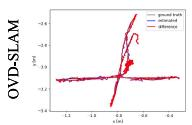
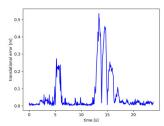
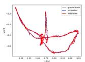
TABLE I
RESULTS OF METRIC ATE ON TUM RGB-D DATASET
| Squence | ORB- SLAM3 [18] | Crowd- SLAM [15] | RDS- SLAM [11] | LC-CRF SLAM [20] | Blitz- SLAM* [29] | CFP- SLAM* [13] | OVD- SLAM | |||||||
| RMSE | S.D. | RMSE | S.D. | RMSE | S.D. | RMSE | S.D. | RMSE | S.D. | RMSE | S.D. | RMSE | S.D. | |
| f3/w/xyz | 0.4932 | 0.2667 | 0.0195 | 0.0104 | 0.0192 | 0.0096 | 0.0202 | 0.0101 | 0.0153 | 0.0078 | 0.0141 | 0.0072 | 0.0135 | 0.0068 |
| f3/w/half | 0.2416 | 0.1735 | 0.0362 | 0.0204 | 0.0333 | 0.0182 | 0.0300 | 0.0153 | 0.0256 | 0.0126 | 0.0237 | 0.0114 | 0.0229 | 0.0111 |
| f3/w/static | 0.1160 | 0.0549 | 0.0069 | 0.0035 | 0.0087 | 0.0037 | 0.0265 | 0.0119 | 0.0102 | 0.0052 | 0.0066 | 0.0030 | 0.0068 | 0.0030 |
| f3/w/rpy | 0.5883 | 0.2517 | 0.0443 | 0.0324 | 0.0373 | 0.0222 | 0.0530 | 0.0365 | 0.0356 | 0.0220 | 0.0368 | 0.0230 | 0.0349 | 0.0211 |
| f3/w/xyz_v | 0.7510 | 0.4684 | 0.0138 | 0.0064 | 0.0173 | 0.0076 | 0.0163 | 0.0076 | / | 1 | 1 | 1 | 0.0132 | 0.0054 |
| f3/w/half_v | 0.3421 | 0.1907 | 0.0227 | 0.0119 | 0.2039 | 0.1534 | 0.0242 | 0.0127 | 1 | 1 | 7 | 0.0234 | 0.0135 | |
| f3/s/xyz | 0.0096 | 0.0047 | 0.0166 | 0.0078 | 0.0112 | 0.0057 | 0.0127 | 0.0055 | 0.0148 | 0.0069 | 0.0090 | 0.0042 | 0.0090 | 0.0045 |
| f3/s/half | 0.0263 | 0.0131 | 0.0256 | 0.0140 | 0.0311 | 0.0165 | 0.0231 | 0.0132 | 0.0160 | 0.0076 | 0.0147 | 0.0069 | 0.0166 | 0.0071 |
TABLE II
RESULTS OF METRIC RPE ON TUM RGB-D DATASET
| Squence | ORB- SLAM3 [18] | Crowd- SLAM [15] | RDS- SLAM [11] | LC-CRF SLAM [20] | Blitz- SLAM* [29] | CFP- SLAM* [13] | OVD- SLAM | |||||||
| RTE | RRE | RTE | RRE | RTE | RRE | RTE | RRE | RTE | RRE | RTE | RRE | RTE | RRE | |
| f3/w/xyz | 0.2612 | 4.9689 | 0.0237 | 0.6511 | 0.0217 | 0.6613 | 0.0256 | 0.6774 | 0.0197 | 0.6132 | 0.0190 | 0.6023 | 0.0182 | 0.6131 |
| f3/w/half | 0.1358 | 2.2674 | 0.0423 | 0.9065 | 0.0322 | 0.8739 | 0.0230 | 0.8233 | 0.0253 | 0.7879 | 0.0259 | 0.7575 | 0.0240 | 0.7105 |
| f3/w/static | 0.1235 | 2.2162 | 0.0095 | 0.2508 | 0.0107 | 0.2791 | 0.0226 | 0.4992 | 0.0129 | 0.3038 | 0.0089 | 0.2527 | 0.0081 | 0.2513 |
| f3/w/rpy | 0.3239 | 6.2217 | 0.0603 | 1.3879 | 0.0495 | 1.0198 | 0.0609 | 1.2861 | 0.0473 | 1.0841 | 0.0500 | 1.1084 | 0.0499 | 0.9566 |
| f3/w/xyz_v | 0.2896 | 5.1773 | 0.0185 | 0.5210 | 0.0202 | 0.5132 | 0.0199 | 0.5450 | 1 | 1 | 1 | 1 | 0.0159 | 0.5010 |
| f3/w/half_v | 0.2014 | 4.0621 | 0.0269 | 0.6425 | 0.1362 | 4.4282 | 0.0270 | 0.7798 | 1 | 1 | 一 | 1 | 0.0253 | 0.7808 |
| f3/s/xyz | 0.0120 | 0.4940 | 0.0203 | 0.4756 | 0.0144 | 0.5269 | 0.0139 | 0.5202 | 0.0144 | 0.5024 | 0.0114 | 0.4875 | 0.0117 | 0.4972 |
| f3/s/half | 0.0223 | 0.7267 | 0.0359 | 0.7267 | 0.0279 | 0.6665 | 0.0258 | 0.7988 | 0.0165 | 0.5981 | 0.0162 | 0.5917 | 0.0205 | 0.6914 |
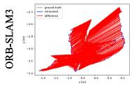
f3/w/xyz
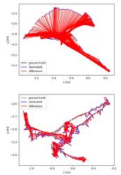
f3/w/half
f3/w/static
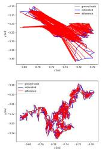
f3/w/rpy
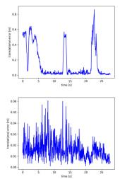
f3/w/xyz
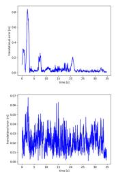
f3/w/half
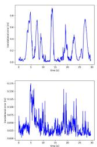
f3/w/static
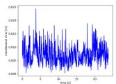
f3/w/rpy
Fig. 4. ATE and RPE for ORB-SLAM3 and OVD-SLAM on some sequences of TUM RGB-D dataset. For ATE, the black lines represent the real trajectories of camera motions, the red lines represent the estimated trajectories, and red lines represent the difference between estimated trajectories and real trajectories. For RPE, the red lines denote the RPE at each moment.
All experiments are conducted on a computer with Ubuntu 18.04 operating system, Intel i7 CPU, RTX 2060 GPU, and 32-GB memory. An Astrapro RGB-D camera is used in realworld experiments.
A. Evaluation on the TUM RGB-D Dataset
The TUM RGB-D dataset [38] provides RGB-D images collected by a Kinect depth camera and ground truth obtained by a motion capture system involving different indoor scenes. It is widely used for RGB-D SLAM algorithm evaluation. We select six high-dynamic sequences and two low-dynamic sequences of the dataset for evaluation.
This article compares the proposed algorithm with ORB-SLAM3 and other state-of-art dynamic SLAM algorithms. The algorithms marked with an asterisk in Tables I and II do not provide open-source code, so we use the data published by the original papers. Other algorithms are conducted on our experimental platform, so the experimental results are not identical to the original papers. Tables I and II show the ATE and RPE results of different methods, respectively. Our algorithm achieves optimal or suboptimal results on all high-dynamic sequences in terms of ATE and RPE. Crowd-SLAM and our algorithm both use object detection to detect dynamic objects. The combination of geometric information makes our system outperform Crowd-SLAM. OVD-SLAM shows better performance than Blitz-SLAM because of the joint optimization of weights and poses. In addition, only CFP-SLAM and our method perform well in low-dynamic environments. The comprehensive performance regarding RPE of our algorithm is also better than other algorithms. Fig. 4 shows the visualization results of ATE and RPE for ORB-SLAM3 and OVD-SLAM at four sequences. As we can see, our system achieves more accurate localization in dynamic environments. The error of trajectories of our system is significantly less than ORB-SLAM3. The RPE results of OVD-SLAM on each sequence are also less than ORB-SLAM3 for most of the time.
TABLE III
RESULTS OF METRIC ATE ON BONN DATASET
| Squence | ORB- SLAM3 [18] | Crowd- SLAM [15] | RDS- SLAM [11] | LC-CRF SLAM [20] | YOLO- SLAM* [16] | ReFusion* [23] | OVD- SLAM RMSE S.D. | |||||||
| RMSE | S.D. | RMSE | S.D. | RMSE | S.D. | RMSE | S.D. | RMSE S.D. | RMSE | |||||
| crowd | 0.496 | 0.413 | 0.019 | 0.009 | 0.018 | 0.009 | 0.027 | 0.012 | 0.033 | 1 | 0.204 | 1 | 0.018 | 0.008 |
| crowd2 | 0.989 | 0.597 | 0.035 | 0.021 | 0.028 | 0.013 | 0.098 | 0.077 | 0.423 | 1 | 0.155 | 1 | 0.023 | 0.013 |
| crowd3 | 0.505 | 0.328 | 0.036 | 0.021 | 0.036 | 0.020 | 0.027 | 0.016 | 0.069 | 1 | 0.137 | / | 0.024 | 0.013 |
| move_no_box | 0.320 | 0.090 | 0.026 | 0.009 | 0.064 | 0.070 | 0.021 | 0.008 | 0.027 | 1 | 0.071 | 1 | 0.018 | 0.008 |
| move_no_box2 | 0.039 | 0.015 | 0.029 | 0.011 | 0.035 | 0.011 | 0.032 | 0.012 | 0.035 | 1 | 0.179 | 0.033 | 0.013 | |
| person_tracking | 0.692 | 0.339 | 0.046 | 0.014 | 0.044 | 0.015 | 0.046 | 0.012 | 0.157 | / | 0.289 | 0.041 | 0.014 | |
| person_tracking2 | 0.788 | 0.491 | 0.099 | 0.016 | 0.048 | 0.016 | 0.041 | 0.015 | 0.037 | 1 | 0.463 | 0.038 | 0.013 | |
| synchronous | 0.809 | 0.440 | 0.038 | 0.036 | 0.043 | 0.026 | 0.292 | 0.111 | 0.014 | 1 | 0.441 | 1 | 0.019 | 0.014 |
| synchronous2 | 1.297 | 0.158 | 0.013 | 0.004 | 0.009 | 0.005 | 0.008 | 0.004 | 0.007 | 1 | 0.022 | 1 | 0.007 | 0.004 |
TABLE IV
RESULTS OF METRIC RPE ON BONN DATASET
| Squence | ORB- SLAM3 [18] | Crowd- SLAM [15] | RDS- SLAM [11] | LC-CRF SLAM [20] | YOLO- SLAM* [16] | ReFusion* [20] | OVD- SLAM | |||||||
| RTE | RRE | RTE | RRE | RTE | RRE | RTE | RRE | RTE | RRE | RTE | RRE | RTE | RRE | |
| crowd | 0.751 | 17.809 | 0.137 | 12.054 | 0.136 | 11.575 | 0.141 | 11.554 | 7 | / | 0.198 | / | 0.136 | 11.535 |
| crowd2 | 0.760 | 25.277 | 0.140 | 15.777 | 0.132 | 15.636 | 0.220 | 15.830 | / | 1 | 0.315 | / | 0.128 | 15.623 |
| crowd3 | 0.356 | 15.860 | 0.104 | 13.693 | 0.114 | 14.833 | 0.108 | 14.854 | 1 | 1 | 0.223 | 1 | 0.101 | 13.863 |
| move_no_box | 0.323 | 14.321 | 0.287 | 13.886 | 0.292 | 13.642 | 0.278 | 13.604 | 1 | 1 | 0.939 | 1 | 0.278 | 13.618 |
| move_bo_box2 | 0.346 | 17.502 | 0.351 | 17.893 | 0.341 | 17.495 | 0.343 | 17.485 | / | 1 | 1.287 | / | 0.342 | 17.465 |
| person_tracking | 0.684 | 33.701 | 0.292 | 23.120 | 0.392 | 31.466 | 0.396 | 31.539 | 1 | 1 | 1.209 | / | 0.294 | 25.407 |
| person_tracking2 | 0.602 | 30.552 | 0.348 | 27.407 | 0.347 | 27.423 | 0.349 | 27.426 | / | 1 | 1.165 | 1 | 0.340 | 26.372 |
| synchronous | 0.580 | 10.013 | 0.046 | 1.154 | 0.058 | 1.338 | 0.235 | 4.347 | 1 | 1 | 1 | 1 | 0.027 | 0.902 |
| synchronous2 | 0.436 | 7.778 | 0.050 | 3.946 | 0.044 | 3.915 | 0.043 | 3.907 | / | / | 1 | / | 0.045 | 3.880 |
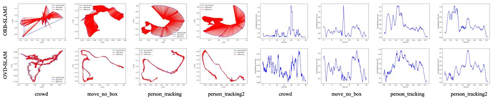
Fig. 5. ATE and RPE for ORB-SLAM3 and OVD-SLAM on some sequences of Bonn dataset. For ATE, the black lines represent the real trajectories of camera motions, the red lines represent the estimated trajectories, and red lines represent the difference between estimated trajectories and real trajectories. For RPE, the red lines denote the relative pose error at each moment.
B. Evaluation on the Bonn Dataset
The Bonn dataset [23] is collected by an Asus Xtion Pro LIVE camera and contains many dynamic scenes. Compared with TUM RGB-D, the dynamic scenes in the Bonn dataset are more challenging.
To further evaluate the accuracy of localization of OVD-SLAM, we selected nine sequences from the Bonn dataset for evaluation. We compare our method to the following dynamic SLAM methods: Crowd-SLAM, RDS-SLAM, LC-CRF SLAM, YOLO-SLAM, and ReFusion. The ATE and RPE of different methods are shown in Tables III and IV, respectively. Our system outperforms the other algorithms in most sequences in the accuracy and stability of localization regarding ATE and RTE. Although the RRE results of OVD-SLAM are not very ideal, our approach outperforms other methods used for comparison. Especially in synchronous2, our system has achieved great improvement from meter level to millimeter level. Fig. 5 shows the visualization results of ORB-SLAM3 and OVD-SLAM. Our proposed approach achieves significant improvement compared with the original ORB-SLAM3. The estimation trajectories of OVD-SLAM are closer to the real trajectories.
C. Ablation Experiment
We test our proposed approach with different configurations to validate the function of each module of our algorithm. Among them, OVD-SLAM: the proposed approach in this article; W/O-FBS: remove all points in dynamic boxes without foreground and background segmentation; W/O-MCC: define person as the unique dynamic object without moving consistency check; W/O-RAW: without recovering static points on moving objects, disable the second stage of optimization, and weights of all remained points are set as 1. Table V shows the experimental results in terms of ATE and integrity of trajectory.
TABLE V
ATE AND PERCENTAGE OF SUCCESSFULLY TRACKED TRAJECTORY FOR OVD-SLAM WITHOUT SPECIFIC MODULE
| Sequence | OVD-SLAM | OVD-SLAM W/O-FBS | OVD-SLAM | OVD-SLAM | ||||||||
| RMSE | S.D. | Traj % | RMSE | S.D. | Traj % | RMSE | W/O-MCC S.D. | Traj % | RMSE | W/O-RAW S.D. | Traj % | |
| f3/w/xyz | 0.0135 | 0.0068 | 99.88% | 0.0163 | 0.0079 | 91.90% | 0.0141 | 0.0069 | 99.88% | 0.0158 | 0.0079 | 99.88% |
| f3/w/half | 0.0229 | 0.0111 | 99.61% | 0.0322 | 0.0168 | 99.61% | 0.0254 | 0.0125 | 99.71% | 0.0264 | 0.0129 | 99.61% |
| f3/w/static | 0.0068 | 0.0030 | 99.58% | 0.0104 | 0.0046 | 88.84% | 0.0067 | 0.0031 | 99.58% | 0.0077 | 0.0036 | 99.58% |
| f3/w/rpy | 0.0349 | 0.0211 | 99.77% | 0.2239 | 0.1396 | 84.07% | 0.0441 | 0.0271 | 99.77% | 0.0762 | 0.0580 | 99.77% |
| f3/w/xyz_v | 0.0132 | 0.0054 | 99.56% | 0.0159 | 0.0073 | 97.78% | 0.0128 | 0.0057 | 99.56% | 0.0131 | 0.0059 | 99.56% |
| f3/w/half_v | 0.0234 | 0.0135 | 99.74% | 0.0251 | 0.0140 | 99.49% | 0.0241 | 0.0134 | 99.83% | 0.0286 | 0.0163 | 99.74% |
| f3/s/xyz | 0.0090 | 0.0045 | 99.75% | 0.1671 | 0.1089 | 77.60% | 0.0111 | 0.0059 | 99.75% | 0.0178 | 0.0076 | 99.75% |
| f3/s/half | 0.0166 | 0.0071 | 99.53% | 0.3039 | 0.1198 | 63.50% | 0.0261 | 0.0130 | 99.53% | 0.0440 | 0.0234 | 99.53% |
| crowd2 | 0.0231 | 0.0126 | 99.00% | 0.1071 | 0.0956 | 99.00% | 0.0723 | 0.0661 | 99.54% | 0.0285 | 0.0158 | 99.00% |
| crowd3 | 0.0238 | 0.0131 | 98.36% | 0.0542 | 0.0415 | 98.36% | 0.0262 | 0.0148 | 98.36% | 0.0287 | 0.0166 | 98.36% |
| move_no_box | 0.0179 | 0.0079 | 99.11% | 0.0266 | 0.0113 | 99.11% | 0.0222 | 0.0118 | 99.11% | 0.0215 | 0.0076 | 99.11% |
In the experimental results, W/O-FBS performs poorly and tracks fewer trajectories than others, especially in f3/s/xyz and f3/s/half. It eliminates all points in dynamic boxes and has not had enough points to initialize or track. W/O-MCC shows a lower performance on crowd2 and move_no_box. Dynamic objects in the two sequences include persons, laptops, and boxes. When we set a person as a unique dynamic object, the system cannot distinguish other moving objects automatically. W/O-RAW performs poorly in low-dynamic scenes. Because there is a lot of nonrigid motion in these sequences and W/O-RAW cannot recover the static points on low-dynamic objects. In other sequences, the performance W/O-RAW has different degrees of decline because of the lack of weights of points.
D. Comparison of Runtime
We compared the execution time of several dynamic SLAM algorithms. The algorithms that require GPU include DynaSLAM, DS-SLAM, RDS-SLAM, and OVD-SLAM. The CPU-only algorithms include ORB-SLAM3, Crowd-SLAM, and LC-CRF SLAM. We also provide the execution time of OVD-SLAM using only the CPU. Because the tracking time for each frame is different in different sequences, we record the minimum and maximum time consumption of different algorithms on the TUM RGB-D dataset in Table VI. With the acceleration of GPU, OVD-SLAM runs in real-time while ensuring high localization accuracy. Our method can run at nearly 10 Hz without a GPU, similar to the DS-SLAM speed that requires a GPU.
E. Evaluation ofDense Reconstruction
To further evaluate the accuracy and stability of tracking, we build dense static maps for the TUM RGB-D dataset and Bonn dataset. Fig. 6 shows the dense reconstruction results of the above two datasets. In the TUM RGB-D dataset, the dense map obtained by ORB-SLAM3 is filled with the shadow of moving persons. In the Bonn dataset, due to the poor localization accuracy and robustness of ORB-SLAM3 in the dynamic environment, it is unable to correctly merge two submaps and obtains a wrong global map. Our proposed approach performs well in the above two datasets.
TABLE VI
RUNTIME COMPARISON OF DIFFERENT METHODS
| Method(with GPU) | Platform | Tracking time |
| DynaSLAM | CPU + Tesla M40 GPU | >350ms |
| DS-SLAM | i7 CPU + RTX2060 GPU | 56.8ms-59.6ms |
| RDS-SLAM(SegNet) | i7 CPU + RTX2060 GPU | 19.2ms-22.4ms |
| CFP-SLAM | i7 CPU + RTX3060 GPU | 42.7ms |
| OVD-SLAM | i7 CPU + RTX2060 GPU | 25.9ms-28.8ms |
| Method(without GPU) | Platform | Tracking time |
| ORB-SLAM3 | i7 CPU | 13.6ms-16.4ms |
| Crowd-SLAM | i7 CPU | 19.2ms-20.6ms |
| LC-CRF SLAM | i7 CPU | 78.7ms-102.3ms |
| OVD-SLAM | i7 CPU | 55.6ms-58.8ms |
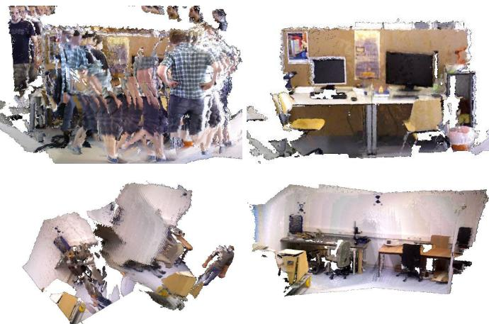
Fig. 6. Dense reconstruction results of ORB-SLAM3 (the first column) and OVD-SLAM (the second column). The first row is from the TUM RGB-D dataset and the second row is from the Bonn dataset.
F. Evaluation in Real Environment
To further evaluate the performance of OVD-SLAM, we design experiments in a real laboratory scene with people who move widely. The size of the laboratory is about 8 × 6 m. A handheld Astrapro RGB-D camera captured the input data with a resolution of 640 × 480 and a frame rate of 30 FPS. Because we had no equipment to obtain the groundtruth of the camera trajectory, we walked a loop with the camera in hand in the room and kept the camera still when testing the performance of the AR application. Fig. 7(a) shows the top view of our collection site and walking route. The estimation trajectories of OVD-SLAM and ORB-SLAM3 are shown in Fig. 7(b). As we can see, the estimation trajectory of ORB-SLAM3 occurs obvious drift, while the estimation trajectory of OVD-SLAM is similar to our walking route. Fig. 7(c) shows the AR application results of comparison between OVD-SLAM and ORB-SLAM3. The cube inserted by ORB-SLAM3 occurs significant movement from its initial position. However, the cube inserted by our method remains in its original position. We also record the running time of each module, which is related to the online performance of our algorithm. The running time of different modules is shown in Table VII. The YOLO module and tracking thread run in parallel, so the cost time of YOLO does not increase the total tracking time. The other time-consuming tracking thread comes from the pose optimization at each stage.

(a)
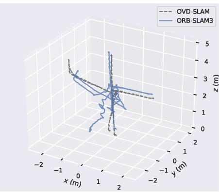
(b)
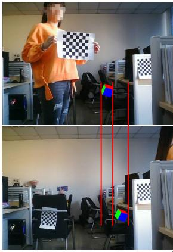
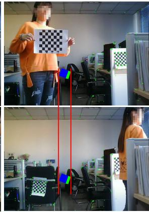
(c)
Fig. 7. Top view of the experimental site and the results of real highly dynamic environments. The red line in (a) denotes the moving trajectory of camera. The trajectory of ORB-SLAM3 in (b) occurs obvious drift in dynamic scenes while our estimation trajectory is similar to the real trajectory. In (c), the first column is from ORB-SLAM3 and the second column is from OVD-SLAM. The cube inserted by ORB-SLAM3 follows the person right for a distance.
TABLE VII
RUNTIME OF EACH MODULE IN REAL WORLD
| Method | YOLO | FBS | MCC | RAW | Tracking |
| OVD-SLAM | 7.1ms | 1.2ms | 12.5ms | 2.3ms | 33.4ms |
| ORB-SLAM3 | 1 | 1 | 1 | 1 | 19.8ms |
V. CONCLUSION
This article proposes a robust and real-time visual SLAM in dynamic environments named OVD-SLAM. The method employs YOLOv5, optical flow, and depth information to determine bounding boxes containing dynamic objects. Our system can recognize dynamic points without predefined dynamic labels. The foreground and background segmentation algorithm can effectively reserve background points in dynamic boxes. Moreover, the two-stage pose estimation restores static points on moving objects, which makes our system adapt to nonrigid motion and low-dynamic environments. In the pose optimization process, the optimization weights of map points reduce the negative influence of potential dynamic points on pose estimation. The experimental results on public datasets show the excellent performance of our method in dynamic environments. In addition, the experiments in real high-dynamic environments show that our proposed method can be applied to real-world scenes and implemented in daily life. However, our system gives a slightly lower performance in terms of RPE. In the future, we plan to improve the performance regarding RPE to enhance our algorithm and reduce the running time to apply OVD-SLAM to embedding devices.
REFERENCES
[1] R. Mur-Artal, J. M. M. Montiel, and J. D. Tardós, “ORB-SLAM: A versatile and accurate monocular SLAM system,” IEEE Trans. Robot., vol. 31, no. 5, pp. 1147–1163, Oct. 2015.
[2] J. Engel, T. Schops, and D. Cremers, “LSD-SLAM: Large-scale direct monocular SLAM,” in Proc. Eur. Conf. Comput. Vis. Cham, Switzerland: Springer, 2014, pp. 834–849.
[3] R. Mur-Artal and J. D. Tardós, “ORB-SLAM2: An open-source slam system for monocular, stereo, and RGB-D cameras,” IEEE Trans. Robot., vol. 33, no. 5, pp. 1255–1262, Oct. 2017.
[4] J. Engel, V. Koltun, and D. Cremers, “Direct sparse odometry,” IEEE Trans. Pattern Anal. Mach. Intell., vol. 40, no. 3, pp. 611–625, Mar. 2016.
[5] M. A. Fischler and R. Bolles, “Random sample consensus: A paradigm for model fitting with applications to image analysis and automated cartography,” Commun. ACM, vol. 24, no. 6, pp. 381–395, 1981.
[6] S. Li and D. Lee, “RGB-D SLAM in dynamic environments using static point weighting,” IEEE Robot. Autom. Lett., vol. 2, no. 4, pp. 2263–2270, Oct. 2017.
[7] Y. Sun, M. Liu, and M. Q.-H. Meng, “Improving RGB-D SLAM in dynamic environments: A motion removal approach,” Robot. Auton. Syst., vol. 89, pp. 110–122, Mar. 2017.
[8] B. Bescos et al., “DynaSLAM: Tracking, mapping, and inpainting in dynamic scenes,” IEEE Robot. Autom. Lett., vol. 3, no. 4, pp. 4076–4083, Jul. 2018.
[9] C. Yu et al., “DS-SLAM: A semantic visual SLAM towards dynamic environments,” in Proc. IEEE/RSJ Int. Conf. Intell. Robots Syst. (IROS), Oct. 2018, pp. 1168–1174.
[10] M. Runz, M. Buffier, and L. Agapito, “MaskFusion: Real-time recognition, tracking and reconstruction of multiple moving objects,” in Proc. IEEE Int. Symp. Mixed Augmented Reality (ISMAR), Oct. 2018, pp. 10–20.
[11] Y. Liu and J. Miura, “RDS-SLAM: Real-time dynamic SLAM using semantic segmentation methods,” IEEE Access, vol. 9, pp. 23772–23785, 2021.
[12] W. Dai, Y. Zhang, P. Li, Z. Fang, and S. Scherer, “RGB-D SLAM in dynamic environments using point correlations,” IEEE Trans. Pattern Anal. Mach. Intell., vol. 44, no. 1, pp. 373–389, Jan. 2022.
[13] X. Hu et al., “CFP-SLAM: A real-time visual SLAM based on coarseto-fine probability in dynamic environments,” in Proc. IEEE/RSJ Int. Conf. Intell. Robots Syst. (IROS), Oct. 2022, pp. 4399–4406.
[14] H. Yin, S. Li, Y. Tao, J. Guo, and B. Huang, “Dynam-SLAM: An accurate, robust stereo visual-inertial SLAM method in dynamic environments,” IEEE Trans. Robot., vol. 39, no. 1, pp. 289–308, Feb. 2023.
[15] J. C. V. Soares, M. Gattass, and M. A. Meggiolaro, “Crowd-SLAM: Visual SLAM towards crowded environments using object detection,” J. Intell. Robotic Syst., vol. 102, no. 2, pp. 1–16, Jun. 2021.
[16] W. Wu, L. Guo, H. Gao, Z. You, Y. Liu, and Z. Chen, “YOLO-SLAM: A semantic SLAM system towards dynamic environment with geometric constraint,” Neural Comput. Appl., vol. 34, no. 8, pp. 6011–6026, Apr. 2022.
[17] G. Jocher et al., “Ultralytics/YOLOv5: V7. 0-YOLOv5 SOTA realtime instance segmentation,” Tech. Rep., Aug. 2022, doi: 10.5281/zenodo.7347926.
[18] C. Campos, R. Elvira, J. J. G. Rodríguez, J. M. M. Montiel, and J. D. Tardós, “ORB-SLAM3: An accurate open-source library for visual, visual-inertial, and multimap SLAM,” IEEE Trans. Robot., vol. 37, no. 6, pp. 1874–1890, Dec. 2021.
[19] D.-H. Kim and J.-H. Kim, “Effective background model-based RGB-D dense visual odometry in a dynamic environment,” IEEE Trans. Robot., vol. 32, no. 6, pp. 1565–1573, Dec. 2016.
[20] Z.-J. Du, S.-S. Huang, T.-J. Mu, Q. Zhao, R. R. Martin, and K. Xu, “Accurate dynamic SLAM using CRF-based long-term consistency,” IEEE Trans. Vis. Comput. Graphics, vol. 28, no. 4, pp. 1745–1757, Apr. 2022.
[21] D. Barath and J. Matas, “Graph-cut RANSAC,” in Proc. IEEE/CVF Conf. Comput. Vis. Pattern Recognit., Jun. 2018, pp. 6733–6741.
[22] R. Scona, M. Jaimez, Y. R. Petillot, M. Fallon, and D. Cremers, “StaticFusion: Background reconstruction for dense RGB-D SLAM in dynamic environments,” in Proc. IEEE Int. Conf. Robot. Autom. (ICRA), May 2018, pp. 3849–3856.
[23] E. Palazzolo, J. Behley, P. Lottes, P. Giguere, and C. Stachniss, “ReFusion: 3D reconstruction in dynamic environments for RGB-D cameras exploiting residuals,” in Proc. IEEE/RSJ Int. Conf. Intell. Robots Syst. (IROS), Nov. 2019, pp. 7855–7862.
[24] X. Yang, Z. Yuan, D. Zhu, C. Chi, K. Li, and C. Liao, “Robust and efficient RGB-D SLAM in dynamic environments,” IEEE Trans. Multimedia, vol. 23, pp. 4208–4219, 2021.
[25] K. He, G. Gkioxari, P. Dollar, and R. Girshick, “Mask R-CNN,” in Proc. ICCV, 2017, pp. 2961–2969.
[26] V. Badrinarayanan, A. Kendall, and R. Cipolla, “SegNet: A deep convolutional encoder–decoder architecture for image segmentation,” IEEE Trans. Pattern Anal. Mach. Intell., vol. 39, no. 12, pp. 2481–2495, Dec. 2015.
[27] T. Ji, C. Wang, and L. Xie, “Towards real-time semantic RGB-D SLAM in dynamic environments,” in Proc. IEEE Int. Conf. Robot. Autom. (ICRA), May 2021, pp. 11175–11181.
[28] A. Li, J. Wang, M. Xu, and Z. Chen, “DP-SLAM: A visual SLAM with moving probability towards dynamic environments,” Inf. Sci., vol. 556, pp. 128–142, May 2021.
[29] Y. Fan, Q. Zhang, Y. Tang, S. Liu, and H. Han, “Blitz-SLAM: A semantic SLAM in dynamic environments,” Pattern Recognit., vol. 121, Jan. 2022, Art. no. 108225.
[30] Y. Zhong, S. Hu, G. Huang, L. Bai, and Q. Li, “WF-SLAM: A robust VSLAM for dynamic scenarios via weighted features,” IEEE Sensors J., vol. 22, no. 11, pp. 10818–10827, Jun. 2022.
[31] X. Chen, J. Xue, J. Fang, Y. Pan, and N. Zheng, “Using detection, tracking and prediction in visual SLAM to achieve real-time semantic mapping of dynamic scenarios,” in Proc. IEEE Intell. Vehicles Symp. (IV), Oct. 2020, pp. 666–671.
[32] A. Bewley, Z. Ge, L. Ott, F. Ramos, and B. Upcroft, “Simple online and realtime tracking,” in Proc. IEEE Int. Conf. Image Process. (ICIP), Sep. 2016, pp. 3464–3468.
[33] M. Sandler, A. Howard, M. Zhu, A. Zhmoginov, and L.-C. Chen, “MobileNetV2: Inverted residuals and linear bottlenecks,” in Proc. IEEE/CVF Conf. Comput. Vis. Pattern Recognit., Jun. 2018, pp. 4510–4520.
[34] J. Jiao, C. Wang, N. Li, Z. Deng, and W. Xu, “An adaptive visual dynamic-SLAM method based on fusing the semantic information,” IEEE Sensors J., vol. 22, no. 18, pp. 17414–17420, Sep. 2022.
[35] S. Cheng, C. Sun, S. Zhang, and D. Zhang, “SG-SLAM: A realtime RGB-D visual SLAM toward dynamic scenes with semantic and geometric information,” IEEE Trans. Instrum. Meas., vol. 72, pp. 1–12, 2023.
[36] R. Kummerle, G. Grisetti, H. Strasdat, K. Konolige, and W. Burgard, “g2o: A general framework for graph optimization,” in Proc. IEEE Int. Conf. Robot Autom. (ICRA), May 2011, pp. 3607–3613.
[37] J. Liu, X. Li, Y. Liu, and H. Chen, “RGB-D inertial odometry for a resource-restricted robot in dynamic environments,” IEEE Robot. Autom. Lett., vol. 7, no. 4, pp. 9573–9580, Oct. 2022.
[38] J. Sturm, N. Engelhard, F. Endres, W. Burgard, and D. Cremers, “A benchmark for the evaluation of RGB-D SLAM systems,” in Proc. IEEE/RSJ Int. Conf. Intell. Robots Syst., Oct. 2012, pp. 573–580.
Jiaming He received the B.S. degree in electronic information engineering from the Dalian University of Technology, Dalian, China, in 2021, where he is currently pursuing the M.S. degree with the School of Information and Communication Engineering.
His interests include simultaneous localization and mapping (SLAM) and computer vision.
Mingrui Li received the B.S. degree in aircraft manufacturing technology from the Nanjing University of Aeronautics and Astronautics, Nanjing, China, in 2017, and the M.S. degree from Chinese Aeronautical Establishment, Beijing, China, in 2022. He is currently pursuing the Ph.D. degree with the School of Information and Communication Engineering, Dalian University of Technology (DUT), Dalian, China.
His research interests include 3-D reconstruction, simultaneous localization and mapping (SLAM), machine learning, and computer vision.
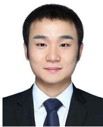
Yangyang Wang (Graduate Student Member, IEEE) received the B.S. and M.S. degrees in electronic information science and technology from Xinjiang Agricultural University, Urumqi, China, in 2014 and 2017, respectively. He is currently pursuing the Ph.D. degree with the School of Information and Communication Engineering, Dalian University of Technology (DUT), Dalian, China.
Since October 2021, he has been a Visiting Fellow with the School of Computer Science and Electronic Engineering, University of Essex, Colchester, U.K. His research interests include underwater localization, underwater simultaneous localization and mapping (SLAM), machine learning, and computer vision.
Hongyu Wang (Member, IEEE) received the B.S. degree in electronic engineering from the Jilin University of Technology, Changchun, China, in 1990, the M.S. degree in electronic engineering from the Graduate School, Chinese Academy of Sciences, Beijing, China, in 1993, and the Ph.D. degree in precision instrument and optoelectronics engineering from Tianjin University, Tianjin, China, in 1997.
He is currently a Professor with the Dalian University of Technology, Dalian, China. His research interests include image processing, computer vision, 3-D reconstruction, and simultaneous localization and mapping (SLAM).
md/2023_OVD-SLAM__An_Online_Visual_SLAM_for_Dynamic_Environments.md 预渲染生成。公式以 MathML 呈现，浏览器原生渲染，不依赖外部脚本或字体 CDN。